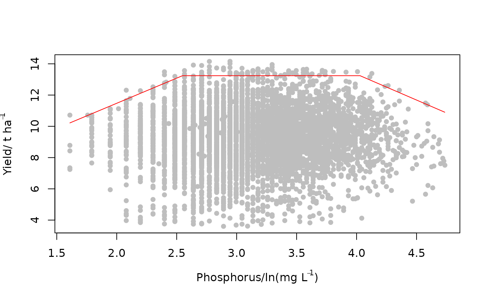

This function fits a boundary model to the upper bounds of a scatter plot of
x and y based on the binning method. The data are first divided
into equal sized sections in the x-axis and a boundary point in each section
is selected based on a set criteria (e.g. 0.90, 0.95 or 0.99 percentile of
y among other criteria). A model is then fitted to the resulting boundary
points by the least squares method. This is done using optimization procedure
and hence requires some starting guess parameters for the proposed model.
Arguments
- x
A numeric vector of values for the independent variable.
- y
A numeric vector of values for the response variable.
- bins
A numeric vector of length 3 or 4 that determines the size of sections. The first and second values give the range of the data to be binned while the third and fourth values give the width of the bins and the step size respectively. If only three values are provided, the step size is assumed to be equal to bin width.
- model
Selects the functional form of the boundary line. It includes
"explore"as default,"blm"for linear model,"lp"for linear plateau model,"mit"for the Mitscherlich model,"schmidt"for the Schmidt model,"logistic"for logistic model,"logisticND"for logistic model proposed by Nelder (1961),"inv-logistic"for the inverse logistic model,"double-logistic"for the double logistic model,"qd"for quadratic model and the"trapezium"for the trapezium model. The"explore"is used to check the position of boundary points in each bin so that the correctmodelcan be applied. For custom models, setmodel = "other".- equation
A custom model function writen in the form of an R function. Applies only when argument
model="other", else it isNULL.- theta
A numeric vector of initial starting values for optimization in fitting the boundary model. Its length and arrangement depend on the suggested model:
For the
"blm"model, it is a vector of length 2 arranged as intercept and slope.For the
"lp"model, it is a vector of length 3 arranged as intercept, slope and maximum response.For the
"logistic"and"inv-logistic"models, it is a vector of length 3 arranged as the scaling parameter, shape parameter and maximum response.For the
"logisticND"model proposed by Nelder (1961), it is a vector of length 3 arranged as the scaling parameter, shape parameter and maximum response.For the
"double-logistic"model, it is a vector of length 6 arranged as the scaling parameter one, shape parameter one, maximum response, maximum response, scaling parameter two and shape parameter two.For the
"qd"model, it is a vector of length 3 arranged as constant, linear coefficient and quadratic coefficient.For the
"trapezium"model, it is a vector of length 3 arranged as intercept one, slope one, maximum response, intercept two and slope two.For the
"mit"model, it is a vector of length 3 arranged as the intercept, shape parameter and the maximum response.For the
"schmidt"model, it is a vector of length 3 arranged as scaling parameter, shape parameter (x-value at maximum response ) and maximum response.
- tau
A percentile value (0-1) that represents the boundary point within each bin (default is
tau = 0.95).- optim.method
Describes the method used to optimize the model as in the
optim()function. The methods include"Nelder-Mead","BFGS","CG","L-BFGS-B","SANN"and"Brent".- xmin
Numeric value that describes the minimum
xvalue to which the boundary line is to be fitted (default ismin(x)).- xmax
A numeric value that describes the maximum
xvalue to which the boundary line is to be fitted (default ismax(x)).xminandxmaxdetermine the subset of the data set used to fit boundary model.- plot
If
TRUE, a plot is part of the output. IfFALSE, plot is not part of output (default isTRUE).- bp_col
Selects the color of the boundary points.
- bp_pch
Point character as
pchof theplot()function. It controls the shape of the boundary points on plot (bp_pch = 16as default).- bl_col
Colour of the boundary line.
- lwd
Determines the thickness of the boundary line on the plot (default is 1).
- line_smooth
Parameter that describes the smoothness of the boundary line. (default is 1000). The higher the value, the smoother the line.
- ...
Additional graphical parameters as in the
par()function.
Value
A list of length 5 consisting of the fitted model, equation form, parameters of the boundary line, the residue mean square and the boundary points. Additionally, a graphical representation of the boundary line on the scatter plot is produced.
Details
Some inbuilt models are available for the blbin() function. The
"explore" option for the argument model generates a plot showing the
location of the boundary points selected by the binning procedure. This helps to
identify which model type is suitable to fit as a boundary line. The suggest model
forms are as follows:
Linear model (
"blm") $$y=\beta_1 + \beta_2x$$ where \(\beta_1\) is the intercept and \(\beta_2\) is the slope.Linear plateau model (
"lp") $$y= {\rm min}(\beta_1+\beta_2x, \beta_0)$$ where \(\beta_1\) is the intercept , \(\beta_2\) is the slope and \(\beta_0\) is the maximum response.The logistic (
"logistic") and inverse logistic ("inv-logistic") models $$ y= \frac{\beta_0}{1+e^{\beta_2(\beta_1-x)}}$$ $$ y= \beta_0 - \frac{\beta_0}{1+e^{\beta_2(\beta_1-x)}}$$ where \(\beta_1\) is a scaling parameter , \(\beta_2\) is a shape parameter and \(\beta_0\) is the maximum response.Logistic model (
"logisticND") (Nelder (2009)) $$ y= \frac{\beta_0}{1+(\beta_1 \times e^{-\beta_2x})}$$ where \(\beta_1\) is a scaling parameter, \(\beta_2\) is a shape parameter and \(\beta_0\) is the maximum response.Double logistic model (
"double-logistic") $$ y= \frac{\beta_{0,1}}{1+e^{\beta_2(\beta_1-x)}} - \frac{\beta_{0,2}}{1+e^{\beta_4(\beta_3-x)}}$$ where \(\beta_1\) is a scaling parameter one, \(\beta_2\) is shape parameter one, \(\beta_{0,1}\) and \(\beta_{0,2}\) are the maximum response , \(\beta_3\) is a scaling parameter two and \(\beta_4\) is a shape parameter two.Quadratic model (
"qd") $$y=\beta_1 + \beta_2x + \beta_3x^2$$ where \(\beta_1\) is a constant, \(\beta_2\) is a linear coefficient and \(\beta_3\) is the quadratic coefficient.Trapezium model (
"trapezium") $$y={\rm min}(\beta_1+\beta_2x, \beta_0, \beta_3 + \beta_4x)$$ where \(\beta_1\) is the intercept one, \(\beta_2\) is the slope one, \(\beta_0\) is the maximum response, \(\beta_3\) is the intercept two and \(\beta_3\) is the slope two.Mitscherlich model (
"mit") $$y= \beta_0 - \beta_1*\beta_2^x$$ where \(\beta_1\) is the intercept, \(\beta_2\) is a shape parameter and \(\beta_0\) is the maximum response.Schmidt model (
"schmidt") $$y= \beta_0 + \beta_1(x-\beta_2)^2$$ where \(\beta_1\) is ascaling parameter, \(\beta_2\) is a shape parameter (x-value at maximum response ) and \(\beta_0\) is the maximum response .Custom model ("other") This option allows you to create your own model form using the function
function(). The custom model should be assigned to the argumentequation. Note that the parameters for the custom model should beaandbfor a two parameter model;a,bandcfor a three parameter model;a,b,canddfor a four parameter model and so on.
The function blbin() utilities the optimization procedure of the
optim() function to determine the model parameters. There is a tendency
for optimization algorithms to settle at a local optimum. To remove the risk of
settling for local optimum parameters, it is advised that the function is run using
several starting values and the results with the smallest error (residue mean square)
can be taken as a representation of the global optimum.
References
Casanova, D., Goudriaan, J., Bouma, J., & Epema, G. (1999). Yield gap analysis in relation to soil properties in direct-seeded flooded rice.
Nelder, J.A. 1961. The fitting of a generalization of the logistic curve. Biometrics 17: 89–110.
Phillips, B.F. & Campbell, N.A. 1968. A new method of fitting the von Bertelanffy growth curve using data on the whelk. Dicathais, Growth 32: 317–329.
Schmidt, U., Thöni, H., & Kaupenjohann, M. (2000). Using a boundary line approach to analyze N2O flux data from agricultural soils. Nutrient Cycling in Agro-ecosystems, 57, 119-129.
Examples
x<-evapotranspiration$`ET(mm)`
y<-evapotranspiration$`yield(t/ha)`
bins = c(100,350,25)
blbin(x,y, bins=bins ,theta=c(0.5,0.02), model = "blm", xmax = 250)

#> $Model
#> [1] "blm"
#>
#> $Equation
#> [1] y = β₁ + β₂x
#>
#> $Parameters
#> Estimate
#> β₁ -0.80317908
#> β₂ 0.01967599
#>
#> $RMS
#> [1] 0.008735181
#>